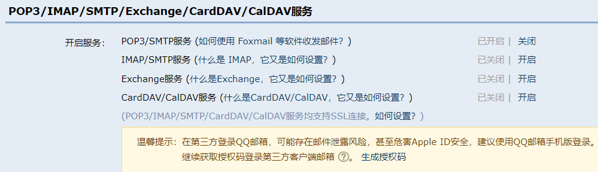

Flask获取邮件验证码的全过程大致可以分为三大过程：(项目实例：修改邮箱)
1）首先我们需要配置邮件扩展，谈到扩展，我们就需要将扩展包和实例都放置在扩展文件中（我们需要下载：pip install flask-mail）
主目录/exts.py
from flask_mail import Mail
mail = Mail()2）扩展类的实例都是需要绑定到app上（和前面提到的数据库db实例一样）
主目录/app.py
from exts import mail
from flask import Flask
def create_app():
app = Flask(__name__)
mail.init_app(app)
return app3）有扩展类的实例，却没有配置文件，这时我们需要在config.py文件中配置mail，使用了MAIL_USE_TSL的端口号，就将另一个端口注释掉，相关说明已经在代码中
a）运营商的发送者邮箱的服务器地址可以搜一下（比如QQ邮箱，163邮箱，企业邮箱等）
b）查到服务器地址，一般会有介绍使用哪种端口号
c）MAIL_PASSWORD不是邮箱的密码也不是qq密码，而是邮箱的授权码：登录自己的邮箱，进入设置，点击账户，往下拉会看到以下界面开启第一个服务，让其生成授权码就可以

主目录/config.py
# 发送者邮箱的服务器地址
MAIL_SERVER = "smtp.qq.com"
# MAIL_USE_TLS:端口号587
# MAIL_USE_SSL:端口号465
# QQ邮箱不支持非加密方式发送邮件
MAIL_PORT = 587
MAIL_USE_TLS = True
# MAIL_USE_SSL = False
MAIL_USERNAME = "目标邮箱地址"
MAIL_PASSWORD = "你的生成授权码"
MAIL_DEFAULT_SENDER = "发送者邮箱地址"
4）一些相关的文件需要借用上一篇的“python web框架Flask——csrf攻击”的文件，这里就添加一些必要的代码。在视图函数中配置一个url供我们访问（发送邮件）。另外我们从flask_mail包中导入Message类，创建消息类实例，第一个参数是邮件的标题，第二个参数是邮件的接收者，第三个参数是邮件的内容。定义好通过mail实例下的send()方法发送
主目录/app/cms/views.py
@bp.route("/email_captcha")
def email_captcha():
"""
发送邮件我们不需要跳转页面，不需要重定向；邮件地址信息只需通过get方式请求即可
后台获取邮件信息需要进行相关的判断，没有通过验证就将信息（状态码，信息）发送到前端页面（js文件处理）
通过验证，我们需要自制验证码，将验证码发送到接收者邮件，并且以邮件地址为键，验证码为值保存到redis缓存中
:return:
"""
# /email_captcha/?email=XXX@qq.com
email = request.args.get("email")
if not email:
return restful.params_error("请输入邮箱地址")
# 获取所有的字母（大小写）并且转换成列表
source = list(string.ascii_letters)
# 再次获取数字,并且拼接到source中
source.extend(map(lambda x: str(x), range(0, 10)))
# 从source中随机取样返回的是一个列表，通过join方式将其变成字符串作为验证码
captcha = "".join(random.sample(source, 6))
message = Message("校园论坛邮箱验证码", recipients=[email], body="您的验证码是：%s" % captcha)
try:
mail.send(message)
except:
return restful.server_error()
# 将邮件保存到redis数据库中
cpcache.set(email, captcha)
return restful.success()1）同样和上面一样，将缓存扩展放置在扩展文件中。注意有两种缓存：redis，memcache。我们这里使用redis缓存，第一件事就是安装缓存（pip install flask-cache）
主目录/exts.py
from flask_cache import Cache
cache = Cache()2）扩展类的实例都是需要绑定到app上（和前面提到的实例一样）
主目录/app.py
from flask import Flask
from exts import cache
def create_app():
app = Flask(__name__)
cache.init_app(app)
return app3）有扩展类的实例，却没有配置文件，这时我们需要在config.py文件中配置cache
主目录/config.py
# Redis数据库配置
CACHE_TYPE = 'redis'
CACHE_REDIS_HOST = '127.0.0.1'
CACHE_REDIS_PORT = 6379
CACHE_REDIS_DB = ''
CACHE_REDIS_PASSWORD = ''4）redis的相关命令：set、get、delete。redis缓存可以在很多地方使用，所以我们另外创建一个文件专门处理redis缓存的，和上一篇“python web框架Flask——csrf攻击”中提到的restful.py文件一样，也是专门处理后台信息（状态码，信息）。我们可以在其他文件里导入就可以调用操作redis缓存
主目录/utils/cpcache.py
from exts import cache
# 设置redis键值对
def set(key, value, timeout=60):
return cache.set(key, value, timeout)
# 获取redis键对应的值
def get(key):
return cache.get(key)
# 删除redis的键和值
def delete(key):
return cache.delete(key)1）前台通过post请求将表单数据提交给后台，后台也对前台传来的数据进行表单验证（数据是否合法）及验证验证码是否正确
主目录/app/cms/forms.py
class ResetEmailForm(BaseForm):
email = StringField(validators=[Email(message="请输入正确格式的邮箱地址")])
captcha = StringField(validators=[Length(6, 6, message="请输入正确长度的验证码")])
def validate_captcha(self, field):
"""
表单验证过程，从redis缓存中获取邮件对应的验证码与前台传来的验证码匹配
:param field:
:return:
"""
captcha = field.data
email = self.email.data
captcha_cache = cpcache.get(email)
if not captcha_cache or captcha.lower() != captcha_cache.lower():
raise ValidationError("邮箱验证码错误！")
def validate_email(self, field):
email = field.data
user = g.cms_user
if email == user.email:
raise ValidationError("不能修改为相同的邮箱！")2）通过表单验证，就可以修改用户的邮箱数据了。涉及post表单请求，也是要预防csrf攻击。具体操作和“上一篇的python web框架Flask——csrf攻击”的操作是一样的。
主目录/app/cms/views.py
class ResetEmailView(views.MethodView):
"""
get方法对应前端后台的get请求，主要是渲染页面
post方法对应前端后台的post请求：
1、获取前台传来的验证码，与在redis缓存的验证码进行匹配
2、匹配成功则将新邮箱赋值给当前用户，保存即可
4、以上三步是忽略csrf攻击时的工作
5、为保证页面局部刷新，前端需要使用Ajax请求，ajax请求防止csrf的方式：
1）在页面上定义一个name为csrf-token的meta标签
2）重写Ajax请求返回一个X-CSRFtoken响应
6、为适应前端json数据格式，需要同意创建一个包，专门处理前端请求返回的状态码及信息（utils/restful.py)
"""
@login_required
def get(self):
return render_template("cms/cms_resetemail.html")
@login_required
def post(self):
form = ResetEmailForm(request.form)
if form.validate():
email = form.email.data
g.cms_user.email = email
db.session.commit()
return restful.success()
else:
return restful.params_error(form.get_error())
bp.add_url_rule("/resetemail", view_func=ResetEmailView.as_view("resetemail"))这样邮箱验证码和修改邮箱的实例已经结束了。学到了技术，记得点个赞哦，再次感谢朋友们阅读完博客。